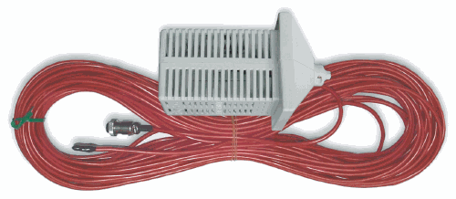
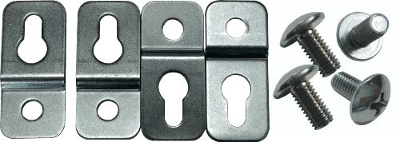
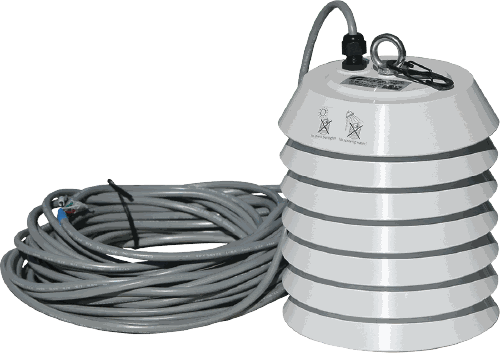
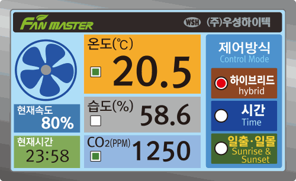

온도센서와 고정부품


FTC 시리즈는 온도 또는 시간 조건으로 팬을 자동·수동 운전하며, 30m 온도센서와 컨트롤러 고정부품을 사용합니다.
센서 종류와 코드 길이, 컨트롤러 고정부품 및 FHC-1500의 컬러 TFT 운전 화면을 확인하세요.


FTC 시리즈는 온도 또는 시간 조건으로 팬을 자동·수동 운전하며, 30m 온도센서와 컨트롤러 고정부품을 사용합니다.


현재 온도·습도·CO₂와 팬 속도를 한 화면에서 확인하고, 하이브리드·시간·일출·일몰 제어 방식을 선택할 수 있습니다.
검토 요청 센서 구성과 화면 기능 설명은 홈페이지 자료 기준이며, 실제 출고 구성과 프로그램 버전은 담당자 확인이 필요합니다.